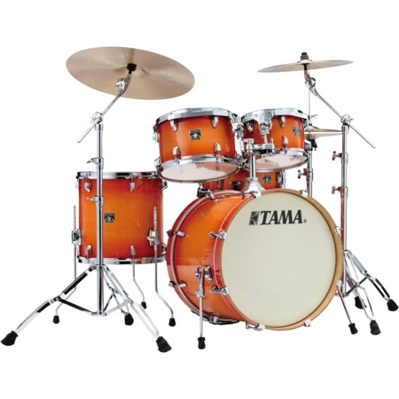

Tama est une marque de batterie créer en 1960 et s'est rapidement
imposée comme un monument de la batterie mondiale grâce à plusieurs
groupe tels que Metallica, Judas Priest, Korn ou encore Slayer.

Tama CL50R+H-TLB Superstar Classic Tangerine
999.99€
Futs : 6 Plis (7.5mm) en peuplier
Configuration :
Grosse Caisse : 20" x 16"
Tom 1 : 10" x 07"
Tom 2 : 12" x 08"
Stand tom : 14" x 07"
Caisse claire 14" x 14"
Caisse claire 14" x 5"
Autre :
Pied de cymbale avec pied.
Pied de caisse claire avec avec charleston
Futs en érable Chromés